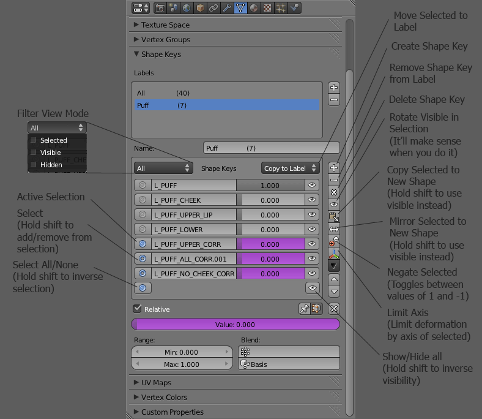

Replaces the default Shape Key panel in Blender with one capable of sorting shape keys into labels.
View the Project on GitHub assumptionsoup/Advanced-Shape-Key-Panel
Advanced Shape Key Panel adds the ability to sort shape keys and vertex groups into labels Blender. It also adds a number of shape-key related functions that I found useful. It is part of a series of scripts I've written as I've started to learn and use Blender for my personal projects. Advanced Shape Key Panel is released under GPL v3.0 and is intended for Blender 2.63.
Advanced Shape Key Panel replaces the default shape key and vertex group panels. You can find them in Properties -> Object Data.
To Install Advanced Shape Key Panel copy the entire source folder into the blender scripts/addon directory.
On Windows this directory is usually at %userprofile%\AppData\Roaming\Blender Foundation\Blender\2.63\scripts\addons unless it was changed in the user preferences.
I'm currently using Blender to create a small short film. I'm still learning Blender, and it's largely a linear process as I learn what I need to accomplish for each stage in my personal production. There are large gaping holes in my current knowledge of how to use Blender. Because of this, the scripts I'm releasing now are all in the "Testing" stage. It is very likely that they will have bugs related to my lack of current knowledge. Even worse, these scripts could be implementing a feature that already exists!
I don't know how far my little project will go. I don't know if or when I will be able to use Blender in my professional career. Therefore, I have no way of knowing if the scripts I write now will ever reach a more polished state. Given the open nature of Blender, my hopes for the future of Blender itself, and my belief in the copy-left movement, I've chosen to release these scripts in their current unpolished state.
I sincerely hope that they are as useful to you as they have been for me. If you're a script writer who is interested in these scripts, please don't hesitate to fork them!